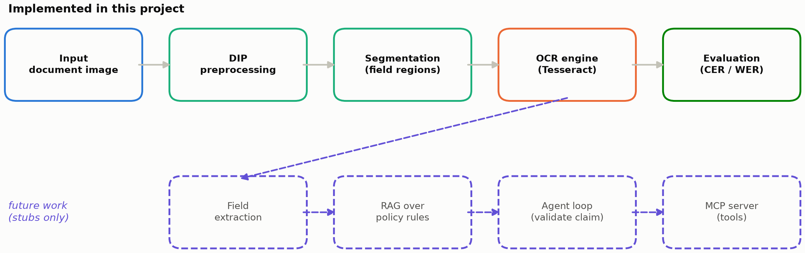
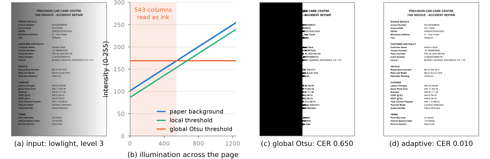
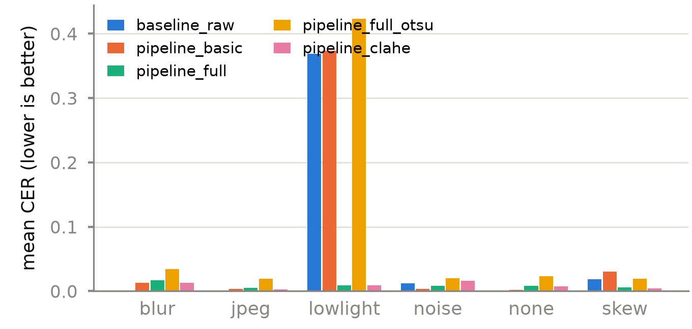

Abstract—Insurance claim intake in India receives claim forms and garage invoices as phone photographs: blurred, noisy, skewed, unevenly lit and heavily recompressed. Optical character recognition (OCR) degrades on such captures and every downstream step inherits the error. We ask a narrow, measurable question: how much of that loss can classical digital image processing (DIP) recover before the recogniser ever sees the page? We build a controlled corpus of 60 synthetic Indian claim documents with exact ground truth, apply five degradations at three severities each (960 images), and compare a raw-OCR baseline against four pipelines built from swappable DIP stages. On the held-out test split (18 documents, 288 images, 1440 OCR calls), the full pipeline cuts mean character error rate (CER) from 0.0749 to 0.0089, a reduction of 88.1%. The gain is not uniform: CER falls 97.6% on uneven illumination and 67.9% on skew, but rises on blurred, JPEG-compressed and already-clean pages. A leave-one-stage-out ablation attributes +0.0769 CER to adaptive thresholding alone. We report the negative results, show why a global threshold fails where a local one succeeds, and release the seeded code that reproduces every number.
Index Terms—document image processing, optical character recognition, adaptive thresholding, image binarization, ablation study, reproducible research.
Motor insurance claim intake in India is a document problem before it is a decision problem. A claimant photographs a handwritten or printed claim form and a garage tax invoice on a phone, often indoors, at an angle, under a single overhead light, and uploads images that a messaging pipeline has already recompressed. The insurer must read policy numbers, claim numbers, GSTIN, vehicle registration and line-item amounts from those pictures. Every character the recogniser gets wrong propagates: a misread policy number fails validation, a misread amount settles the wrong figure.
The capture defects are not exotic. They are the classical ones—defocus blur, sensor noise, page skew, non-uniform illumination and compression artefacts—and they are exactly what classical DIP was built to address. The engineering question is therefore not whether preprocessing is possible but whether it is worth it, and for which defects. That question is rarely answered quantitatively. Practitioners assemble a plausible chain of filters, observe that output looks cleaner, and ship it.
This work treats the chain as the object of study rather than the tool. We fix an OCR engine, construct a corpus in which the ground truth is known exactly and the degradation is known by type and severity, and measure what each stage contributes. Our contributions are: (i) a reproducible, seeded corpus of Indian claim documents with factorised degradations; (ii) a configuration-driven pipeline of swappable DIP stages with a measured baseline; (iii) a leave-one-stage-out ablation that isolates each stage's marginal contribution; and (iv) an honest account of where the pipeline hurts, with the mechanism explained rather than tuned away.
Binarisation dominates the document-imaging literature. Otsu's global threshold [1] maximises between-class variance over the whole-image histogram and remains the default in most OCR toolchains. Local methods compute a threshold per pixel neighbourhood: Niblack [2] from the local mean and standard deviation, and Sauvola and Pietikäinen [3] with a dynamic-range correction that suppresses background texture. The DIBCO competition series [4] has benchmarked such methods on degraded historical documents for over a decade and is now dominated by learned binarisers.
For the defects that precede binarisation, bilateral filtering [5] smooths while preserving edges by weighting neighbours in both space and intensity, and non-local means [6] exploits self-similarity across the whole image, which suits documents because glyph patches recur. Contrast-limited adaptive histogram equalisation (CLAHE) [7] redistributes local intensity while bounding noise amplification. Skew is classically estimated from the bounding boxes of connected components [8] or from projection profiles. Tesseract [9] is the standard open recogniser; since v4 its line recogniser is an LSTM, which changes what preprocessing helps, because the network has itself seen degraded training data. Ye and Doermann [10] survey document image quality assessment, i.e. predicting OCR accuracy from the image alone.
The gap we address is methodological. Papers that report preprocessing gains for OCR typically bundle several operations and report one aggregate improvement on uncontrolled captures [11], so the contribution of any single stage is unidentifiable. Reported outcomes also reverse with capture quality—global thresholding can beat local methods on sharp, evenly lit scans—and negative results are seldom published at all. A controlled corpus with exact ground truth and factorised degradations makes per-stage, per-defect and per-severity attribution possible, and that is what we build.
A stage is a pure function from image to image with declared parameters. A
pipeline is an ordered list of stages named in a YAML configuration and resolved
through a registry at load time, so a pipeline is data, not code, and an unknown stage name
fails at start-up rather than mid-run. No numeric constant appears in the image-processing
code; every parameter lives in the configuration file. Fig. 1 shows the end-to-end flow,
and Table I lists the stages of the headline pipeline, pipeline_full.

Deskew estimates the page angle by inverting an Otsu binarisation, taking the coordinates of all foreground pixels and fitting a minimum-area rectangle. OpenCV reports that rectangle's angle in a quadrant-dependent range, so the raw value is folded into [−45°, 45°]; an estimate beyond a configured bound is rejected as unreliable and treated as zero rotation. Adaptive thresholding computes a Gaussian-weighted local mean over a 31 × 31 neighbourhood and subtracts a constant C = 15, producing one threshold per pixel instead of one per page. Morphological opening uses a 2 × 2 kernel on the inverted image, since the operation must act on the ink.
pipeline_full, in order, with the parameters
fixed in the configuration file.| # | Stage | Parameters |
|---|---|---|
| 0 | grayscale | — |
| 1 | nlmeans_denoise | h = 16.0, template 7, search 21 |
| 2 | median_blur | ksize = 3 |
| 3 | bilateral_filter | d = 7, σc = σs = 50 |
| 4 | deskew | max |θ| = 15°, border 255 |
| 5 | adaptive_threshold | block = 31, C = 15 |
| 6 | morphology_open | 2 × 2 kernel, 1 iteration |
Both the reference text and the OCR output are normalised identically (lower-cased,
whitespace collapsed, punctuation retained) and scored with Levenshtein edit distance [12],
giving CER over characters and WER over whitespace-delimited tokens. CER is deliberately
not capped at 1.0, so a catastrophic binarisation that invents characters is visible as a
value above one rather than clipped to it. The reserved method
baseline_raw applies no preprocessing and defines the comparison. Algorithm 1
states the procedure.
C, methods M,
engine E, seed sd, degradation
g, level l in C
dor ← RNG(CRC32(s, d, g, l))
▷ stable across processesx ← Degrade(Render(d),
g, l, r)y ← GroundTruth(d)m
in M doz ← x
if m = baseline
else Pipeline(m)(x)t ← E.read(z)y, t), WER(y, t), timingsReal claim documents carry personal data and cannot be redistributed, and hand-keying reference text is expensive and error-prone. We therefore synthesise the corpus, which buys character-exact ground truth at zero labelling cost and full control over the degradation.
Sixty documents are rendered at 1240 × 1754 px (A4 at 150 dpi),
half motor claim forms and half garage tax invoices, with field values drawn from Faker's
en_IN locale. Identifiers follow Indian conventions: policy and claim numbers,
GSTIN, vehicle registrations such as MH 07 DN 3514, and amounts in Indian digit
grouping (INR 1,15,299.55). Invoice arithmetic is
internally consistent—subtotal equals labour plus parts, CGST and SGST are each 9% of
the subtotal—so a future extraction stage can be validated against the page's own
semantics. Each document averages 849 characters, 115 words and 25 labelled fields, and is
written out with its reference text and a JSON field map.
Five degradations are applied at three severity levels: Gaussian blur
(k = 3/5/7), additive Gaussian noise (σ = 10/25/40), rotation
(2°/5°/8°), a multiplicative illumination gradient (minimum gain
0.75/0.55/0.40) and JPEG recompression (quality 60/30/10). With the undegraded condition
this gives 16 conditions per document and 960 images in total. Each variant's random state
is derived from the CRC32 of (seed, document, degradation, level) rather than Python's
salted hash(), so every image is bit-identical across runs and machines.
The corpus is split 30/12/18 into train, validation and test before any tuning. All parameter selection was performed on the train split and confirmed on validation; every number reported in Section VII comes from the test split alone.
The system is Python 3.12 in a src/ layout: OpenCV for image operations,
pytesseract driving Tesseract 5.5.4 (--oem 3 --psm 6), jiwer for edit
distances, pandas for the tidy results table and matplotlib for figures. Stages,
degradations and OCR engines are each resolved through a registry behind a
Protocol, so replacing Tesseract with a learned recogniser touches one class
and one configuration line and leaves the runner, metrics and report untouched.
A single entry point exposes generate, degrade,
run, ablate, report and all. Results are
written long-format—one row per (document, degradation, level, method)—so every
table and figure in this paper is a groupby of the same CSV, and the report is
generated from it rather than typed. The suite has 124 tests and is lint-clean under ruff. A
full make all run takes 27 min 36 s with eight workers and
reproduces identical numbers from a clean checkout. The code, the generated report and all
figures are at github.com/tejasp0008/DocuLens.
The novelty here is not a new filter: every operator used is textbook. What is novel is the measurement discipline applied to their combination, and the visualisation that makes the result mechanistic rather than anecdotal.
Fig. 2 is that visualisation, and it is the project's USP. It takes one corpus image under severe uneven illumination and shows, in one row, why the headline result happens. Panel (b) plots the paper background intensity across the page against the single threshold Otsu selects for the whole image. Because the illumination gradient drives the background from 255 down to 102 while Otsu commits to T = 169, 543 of the 1240 image columns hold paper that is darker than the global threshold. Those columns are binarised as ink: panel (c) shows the resulting black slab, which destroys 44% of the page and drives CER to 0.650—worse than performing no preprocessing at all. A threshold computed per neighbourhood tracks the gradient instead of fighting it, and panel (d) recovers the same page at CER 0.010. This single figure explains the 97.6% gain on illumination, the failure of the Otsu variant, and the ablation result in Section VII simultaneously.

doc_002 under level-3 uneven illumination. (a) The degraded input. (b) Paper
background intensity per image column (blue) against the single threshold Otsu selects for
the page (orange) and the local threshold surface the adaptive stage uses instead (green);
in the shaded band the paper is darker than the global threshold. (c) Global Otsu
binarisation: the 543 shaded columns are read as ink, destroying 44% of the page. (d) The
adaptive threshold on the same input. CER values are those recorded for these exact images
in the evaluation table.Three further elements distinguish the study. First, the factorised corpus makes attribution possible: a gain can be assigned to a specific defect rather than averaged into a single score. Second, the leave-one-stage-out ablation measures each stage's marginal contribution instead of justifying stages by intuition. Third, negative results are reported in the same table as positive ones and are not tuned away.
All results are the test split: 18 documents × 16 conditions × 5 methods = 1440 OCR calls. Table II gives the overall comparison.
| Method | CER | median CER | WER |
|---|---|---|---|
| pipeline_full | 0.0089 | 0.0073 | 0.0898 |
| pipeline_clahe | 0.0090 | 0.0049 | 0.0765 |
| baseline_raw | 0.0749 | 0.0006 | 0.1082 |
| pipeline_basic | 0.0796 | 0.0049 | 0.1439 |
| pipeline_full_otsu | 0.0984 | 0.0217 | 0.2567 |
The baseline's median CER (0.0006) is far below its mean (0.0749): most conditions are easy and a minority are catastrophic.
The full pipeline reduces mean CER from 0.0749 to 0.0089, a drop of 88.1%. Two
comparisons sharpen that number. Replacing only the adaptive threshold with a global Otsu
threshold (pipeline_full_otsu) yields 0.0984—worse than no preprocessing
at all—so the gain is attributable to local thresholding rather than to preprocessing
in general. Adding CLAHE (pipeline_clahe) changes CER by 0.0001, within noise:
once the threshold is local, the contrast enhancement it was meant to provide is redundant.
Table III decomposes the result by degradation. The pipeline is not a general-purpose improvement; it is a strong correction for three defects and a mild liability for three others.
pipeline_full.| Degradation | Baseline | Pipeline | Change |
|---|---|---|---|
| lowlight | 0.3688 | 0.0087 | −97.6% |
| skew | 0.0183 | 0.0059 | −67.9% |
| noise | 0.0119 | 0.0080 | −33.1% |
| none (clean) | 0.0003 | 0.0084 | +2968% |
| jpeg | 0.0003 | 0.0052 | +1818% |
| blur | 0.0002 | 0.0169 | +7355% |
The large positive percentages are increases over a near-zero base: in absolute terms the pipeline costs at most 0.0167 CER on these conditions, while it saves 0.3601 on illumination.
The severity breakdown explains the asymmetry. Uneven illumination is a threshold effect: at level 1 the baseline is unaffected (CER 0.0005), but at level 2 it collapses to 0.5255 and at level 3 to 0.5805, because the darkened paper crosses the recogniser's own binarisation point. The pipeline is flat at 0.0087 across all three levels—it does not degrade gracefully, it simply does not degrade. Skew shows the same shape more mildly (0.0010 → 0.0103 → 0.0437 for the baseline, against 0.0061 → 0.0048 → 0.0067 for the pipeline). Blur runs the other way: Tesseract tolerates defocus well (baseline 0.0002–0.0003 at every level), while the pipeline worsens monotonically with severity (0.0066 → 0.0163 → 0.0277).

Table IV removes one stage at a time from pipeline_full and re-runs the
whole evaluation. A positive delta means removing the stage made recognition worse, so the
stage earns its place.
| Stage removed | CER | ΔCER |
|---|---|---|
| adaptive_threshold | 0.0858 | +0.0769 |
| nlmeans_denoise | 0.0213 | +0.0124 |
| deskew | 0.0136 | +0.0047 |
| grayscale | 0.0089 | 0.0000 |
| bilateral_filter | 0.0078 | −0.0011 |
| morphology_open | 0.0050 | −0.0039 |
| median_blur | 0.0028 | −0.0061 |
Adaptive thresholding carries the pipeline: removing it costs more CER than every other stage combined, and the residual 0.0858 is close to the untreated baseline. Non-local means and deskew pay for themselves. Grayscale conversion is exactly neutral because the corpus is rendered in grayscale already; it is retained because a photographed page is not.
The last three rows invite a mistake that we explicitly did not make. These deltas were measured on the same split as the headline numbers, so dropping those stages on their strength would be selection on the test set and would invalidate every figure above. We instead defined the reduced pipeline and evaluated it on train: it scored 0.0460 against 0.0085 for the full pipeline, and collapsed to 0.7054 on the strongest noise condition where the full pipeline scores 0.0068. Leave-one-out measures a stage's marginal contribution, not the joint necessity of a group: the three smoothing stages are individually redundant and collectively load-bearing.
The six worst individual cases are all level-3 blur on invoices, with CER between 0.0317 and 0.0444 against a baseline of approximately zero. The mechanism is consistent: defocus thickens strokes, and the adaptive threshold followed by morphological opening merges adjacent glyphs in the dense numeric columns of an invoice, turning digit pairs into single blobs. Invoices fail where claim forms do not because their numeric fields are narrower and more tightly packed. The implication is a routing decision rather than a better filter: a page that is already sharp and evenly lit should bypass the pipeline.
Preprocessing costs 2.70 s per page of mean wall-clock time in the parallel evaluation against 1.38 s for baseline OCR alone; measured single-threaded in the interactive tool, the same pipeline takes 0.16–0.22 s per page, so the evaluation figure reflects eight-way contention and overstates deployed latency.
Pages are rendered, not scanned: real captures add paper texture, ink variation, handwriting, stamps, folds and perspective distortion, so the absolute CER here is optimistic and the ranking, not the magnitude, is the transferable result. All numbers come from one engine; a recogniser trained on degraded inputs would reorder the methods. Degradations are applied one at a time, whereas a real photograph is blurred and noisy and skewed at once.
The clearest next step follows from the failure analysis: because the pipeline helps badly degraded pages and mildly harms good ones, a cheap quality classifier gating the pipeline should dominate applying it unconditionally. Beyond that, the registry interfaces are in place for a learned recogniser, a learned binariser benchmarked against DIBCO, and field extraction supervised by the JSON ground truth the generator already writes.
Classical DIP recovers most of the OCR accuracy lost to degraded claim-document capture: 88.1% of the baseline character error on a controlled corpus, and 97.6% of the error caused by uneven illumination. Almost all of that gain is attributable to one stage, adaptive thresholding, and the gain is conditional—the same pipeline mildly degrades clean, blurred and recompressed pages. Reporting that conditionality, rather than a single average, is what makes the result usable: it says to deploy preprocessing behind a quality gate, not in front of every page.